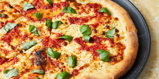
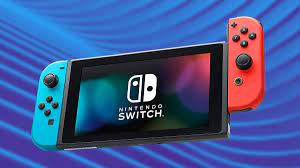

The game soccer appeals to all ages and skill levels, allowing players to showcase their uniqueness, release energy, and experience happiness. The fun of enjoying time with you family and friends whether you win or lose is a great experiance for all

Pizza is a amazaing food that tastes like heaven and I love very taste of it. from the sauce the cheese and pepperoni it all tastes like its made out of this world in my mouth
Learn more...
The Nintendo switch is one of my favorite game consoles it has many fun was to use it such as,
I have fun playing sports with my family or just playing by myself. All together I love using the nintendo switch
Learn more...